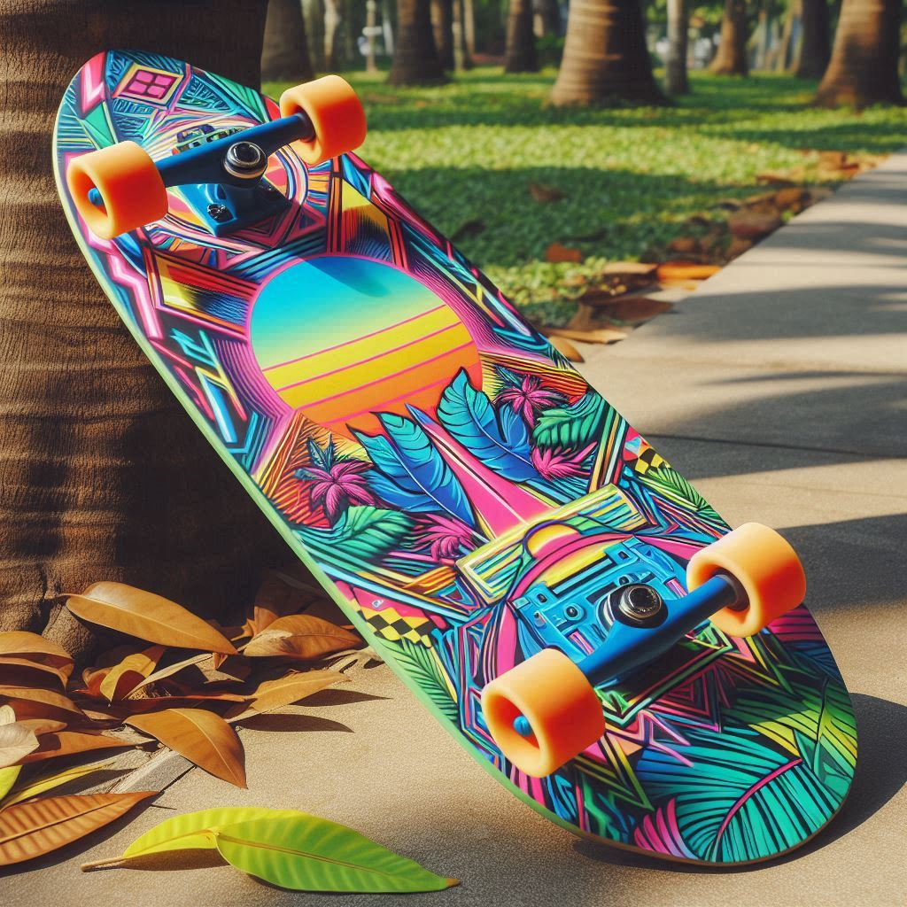
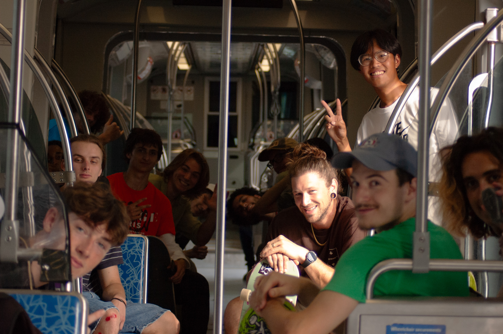

Skateboarding: The pastime of Kings
The What, Dude?
Just a Plank with Holes

please generate an img of an 80s style shaped skateboard
Skateboarding originated in the late 1940s and early 1950s when surfers in California wanted something to do when the waves were flat. They started by attaching roller skate wheels to wooden boxes or boards, creating the first "sidewalk surfers." As the sport grew, skateboards evolved in design and construction. By the 1970s, skateboarding had become a cultural phenomenon, with skate parks and dedicated gear appearing. The advent of polyurethane wheels in 1973 revolutionized the sport, providing better grip and smoother rides. Today, skateboarding continues to evolve, blending athleticism with creativity and influencing fashion, music, and art. Ever tried your hand at any skate tricks yourself?
The Who... Who Are You?
What A Wonderful, Horrible Life

More than just a some hobby, a lifestyle. Skateing is hard, learning to do so well alone would be darn near impossible. The culture is what keeps you getting up after each and every fall, Find your people.
Top 10 Skaters
- 1. Tony Hawk
- 2. Rodney Mullen
- 3. Nyjah Huston
- 4. Elissa Steamer
- 5. Danny Way
- 6. Mark Gonzales
- 7. Lance Mountain
- 8. Chris Cole
- 9. Andrew Reynolds
- 10. Tom Penny
When..You Dont Rush.
Respect The Process

please generate an img of a skate every day sign
Learning how to skateboard is a thrilling journey of perseverance and determination. It begins with mastering the basics, from balancing on the board to executing your first push-off. Each tumble and scrape is part of the process, teaching resilience and dedication. As you progress, the sense of accomplishment grows with every new trick and technique conquered. Skateboarding fosters a unique community spirit, encouraging you to push your limits and support fellow skaters along the way. It's not just about the sport itself, but the growth and connections you make during your ride

please generate an img of a skateboard and a clock
Where..in the World
Lets GOO

please generate an img of different skateboarding places
Skate is art as much as sport. Being able to skate in various environments—like parks, streets, and flatground—opens up a world of possibilities and challenges. Skate parks offer ramps and rails designed for tricks and stunts, while street skating lets you creatively interact with urban architecture, turning curbs and stairs into playgrounds. Flatground skating hones your control and precision, perfect for practicing those foundational tricks. Each environment brings its own set of thrills and skills, making skating a versatile and endlessly exciting pursuit.
How...so consistant
The Passion

please generate an img of a skateboarder doing a kickflip over a traffic cone
Achieving consistency in skateboarding is a blend of practice, patience, and persistence. It starts with nailing down the basics until they become second nature. Each session on the board builds muscle memory, refining your balance and control. Embracing the grind of repetition—whether it’s perfecting an ollie or a kickflip—helps instill the confidence needed to perform tricks seamlessly. The more you skate, the better you understand your board and its nuances. Consistency isn't just about tricks, it's about creating a flow and rhythm in your skating that feels natural and reliable.
Coach or NO Coach? That IS the Question
Having a skateboarding coach can significantly enhance a skater's skills and confidence. Coaches provide personalized guidance tailored to an individual's strengths and weaknesses, helping skaters master techniques and improve their overall performance. They offer valuable feedback, ensuring that proper form and safety practices are followed, which can prevent injuries. Additionally, a coach can help set achievable goals and keep skaters motivated, fostering a supportive environment that encourages progression. With a coach's expertise, skaters can navigate challenges more effectively and enjoy the journey of mastering the sport.
Why Do It?
Keep Getting Back Up

please generate a skateboarding mental health img
Perseverance is essential both in life and skateboarding, as it empowers individuals to overcome challenges and setbacks. In skateboarding, mastering new tricks often involves repeated attempts, failures, and adjustments. Each fall teaches valuable lessons, fostering resilience and determination. Similarly, in life, the ability to keep trying in the face of obstacles builds character and confidence. Embracing perseverance allows us to grow, learn from our experiences, and ultimately achieve our goals, whether it's landing a difficult trick or navigating life's ups and downs. The journey becomes as rewarding as the destination when we commit to never giving up.

please generate an img of a skateboarder falling
AI Prompts
Computer Helpz
- Create an HTML website that is one page but displays seven sections.
- Create this using JavaScript.
- Have the sections dynamically load from a script.
- Rewrite to be a solution using CSS and/or JS that hides all sections except the one you have clicked. The idea is to mimic the nav bar in your main site, where the user clicks a "link" in your nav tag that will hide all the sections on the page and ONLY display info of the section of choice.
- Each section should start with an
<h2>and include an<h3>. - Generate an image of an 80s style shaped skateboard.
- Generate an image of a "Skate Every Day" sign.
- Include skateboarding puns.
- Generate an image of different skateboarding places.
- Generate an image of a skateboarder doing a kickflip over a traffic cone.
- Generate an image related to skateboarding and mental health.
- Generate an image of a skateboard and a clock.
- Generate an image of a skateboarder falling.